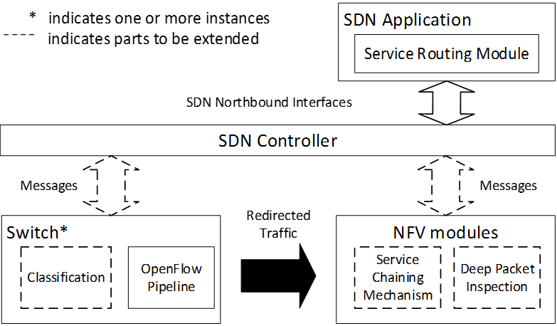

| 行政院國家科學委員會補助專題研究計畫期中進度報告 | □成果報告 |
| ■期中進度報告 |
服務導向軟體定義雲端資料中心－雲端資料中心網路技術(1/3)
Network Technology in Cloud Data Center
計畫類別：□個別型計畫 ■整合型計畫
計畫編號：NSC 103-2218-E-194-007-
執行期間：103年08月01日至105年07月31日
計畫主持人：黃仁竑 特聘教授
共同主持人：石維寬、黃能富、林盈達、陳彥文、楊竹星、吳承崧、江為國、賴槿峰、林柏青、鄭伯炤、侯廷昭、李詩偉、陳俊良、羅孟彥
計畫參與人員：曾惠萍、湯鈺琪、陳敏寬、李光益、尉遲仲涵、李梃暐、劉瑋凱、陳君儀、蔡邦維、張振嘉、劉宜貞、江政謀、謝宜麟、楊順程、許博凱、陳世曄、張德偉、厲秉忠、吳嘉峰、劉得煜、邱彥鈞、Eva Marpaung、簡旭彤、陳霈、邱賢坦、陳增益、鄭宇純、陳碩漢、林哲緯、周啟松、蕭承諺、宋璧伶、李宗穎、吳旻晏、林育瑄、廖柏穎、陳昶吾、黃柏勳、朱衍印
成果報告類型(依經費核定清單規定繳交)：■精簡報告 □完整報告
本計畫除繳交成果報告外，另須繳交以下出國心得報告：
□赴國外出差或研習心得報告
□赴大陸地區出差或研習心得報告
■出席國際學術會議心得報告
□國際合作研究計畫國外研究報告
處理方式：除列管計畫及下列情形者外，得立即公開查詢 ■涉及專利或其他智慧財產權，■一年□二年後可公開查詢
中 華 民 國 104年6月21日
目錄
一、前言
二、研究目的
三、文獻探討
3.1資料中心網路技術
3.2虛擬網路技術
3.3封包深層檢視在軟體定義網路交換器之實作
3.4 流量辨識
3.5雲端社群網路服務
四、研究方法
五、目前成果展示
六、績效指標
七、參考文獻
八、計畫成果自評
中文摘要
繼雲端運算之後，軟體定義網路(Software-Defined Networking，SDN)被視為顛覆傳統網路工業的革命性技術。SDN與雲端運算均被列在Gartner及資策會MIC公布的2014年十大技術趨勢預測中，而且Gartner也特別指出軟體定義資料中心(SDNC)及新的網站架構的需求是未來重要的技術趨勢。近年Google以SDN改造其資料中心的網路架構，成功地提升了網路頻寬使用率達近三倍之多。是故，本整合型計畫以服務導向軟體定義雲端資料中心為研發主軸，希望透過對軟體定義網路(及其網路功能虛擬化技術)應用在雲端資料中心以及社群服務的技術研究與開發，可以對國產雲端資料中心解決方案做出具體貢獻。
本整合型計畫由五個子計畫組成，分別為: 以SDN進行雲端資料中心網路技術的研發(子計畫一)、以SDN進行雲端資料中心虛擬網路技術的研發(子計畫二)、針對SDN的網路功能虛擬化概念在雲端資料中心中進行介面設計與實作(子計畫三、四)以及研究以SDN技術提供雲端資料中心中社群服務所需的雲端資料存取技術(子計畫五)。總計畫已建置一個以軟體定義網路為基礎的雲端資料中心實驗平台以整合各子計畫的研究成果。本計畫將採SDN相關的開放原始碼做為實作平台，包括軟體定義網路的交換器將採用ONF的OpenFlow vSwitch、軟體定義網路的控制器將採用Ryu、軟體定義網路的虛擬網路則採用ONF的FlowVisor。子計畫一主要為成果完成混合式及非混合式的SDN雲端資料中心網路技術開發。子計畫二主要成果為完成混合式的SDN雲端資料中心的網路虛擬化技術及服務品質的提供機制。子計畫三完成向ONF提案網路功能虛擬化及服務鏈架構，並實作Open vSwtich上的DPI功能。子計畫四則開發了一套基於SDN controller與NFV的流量特徵擷取引擎並探討5G網路與SDN軟體定義網路控制進行API結合的機制。子計畫五則完成了導入Facebook 之Social Graph 建立SNS 參考範例及完成網路社群服務資料儲存主機佈署及資料快取演算法設計與效能評量。
關鍵詞: 軟體定義網路、軟體定義網路管理與控制、網路功能虛擬化、社群服務資料存取技術
Abstract
Software Defined Network (SDN) has been considered as a revolution in data networks as well as telecommunications by separating the network control plane from the data forwarding plane through programmable control. Just as important as cloud computing, both SDN and cloud computing are listed in the top 10 strategic technology trends for 2014 identified by both Gartner and the MIC of Institute for Information Industry (III). Recently, Google also has demonstrated how SDN was successfully applied to its Wide Area Network of its data center to improve its bandwidth utilization to higher than 90 percent which used to be less than 40 percent. Therefore, applying SDN to cloud data center becomes an important emerging technology. In this integrated project, we focus on how to apply SDN and network function virtualization (NFV) technologies to cloud data center. We expect that the research results could bring a great impact to the cloud computing and SDN industry in Taiwan.
The integrated project consists of five sub-projects. We classify the research topics in SDN-enabled cloud data center into four categories: the networking technology (sub-project 1), the network virtualization technology (sub-project 2), the network function virtualization technology (sub-project 3 and 4), the social data accessing technology (sub-project 5). In the first year, we built a SDN-enabled cloud data center test bed to deploy the research results from these five sub-projects. The test bed was built based on open source solutions, such as OpenFlow vSwitch (for SDN switch), Ryu (for SDN controller), and FlowVisor (for network virtualization). The major achievements of each sub-project are summarized as follows. In the first sub-project, we designed and implemented SDN-based networking mechanisms for hybrid and all-SDN cloud data center. Virtual network with QoS guarantee was then designed and implemented for hybrid SDN cloud data center by sub-project 2. Architecture of network function virtualization and service chain was proposed to ONF by sub-project 3. Extension of Open vSwitch to support DPI, traffic classification, and stateful connection tracking was also implemented by this sub-project. Characterization of traffic on SDN controller for network funcation virtualization was implemented by sub-project 4. API between 5G network and SDN was also discussed by this sub-project. Finally, sub-project 5 studied the social graph and caching mechanism for on-line social network utilizing SDN network function virtualization architecture.
Keywords: Software Defined Network (SDN), SDN control and management, Network Function Virtualization (NFV), Social data accessing technology
一、前言
雲端運算無疑是近年來資通訊產業最重要的一波革命性的發展，自 2006 年雲端概念萌芽之後，Google, Amazon, IBM, MicroSoft, Facebook 等各國大型資訊及網路服務業者均投入大量的人力、物力爭相發展重要的關鍵技術與商業模式。Gartner 的報告也提出自 2009 年之後，雲端運算相關產業的產值每年均以 20%以上的年複合成長率快速擴張，我國經濟部工業局也預計 2015 年我國雲端軟體與服務的核心產值將可達一千億元，而雲通訊與終端裝置與服務的整體產值則會高達四千五百億元。可以預見的是雲端運算將持續成為未來資通訊產業重要的產業趨勢。我國「國產雲端資料中心解決方案」也於 103 年 1 月 17 日進行啟動儀式，希望帶動台灣雲端相關產業的業者，共同打造國產的雲端完整解決方案，進軍國際，搶攻具有千億美元產值的全球雲端資料中心市場。
在 Gartner 及據資策會 MIC 公布的 2014 年十大技術趨勢預測中，均指出雲端運算、線上社群服務、行動應用及大資料(Big Data)是最主要的技術驅動力，各種以這四項技術為基礎所發展出來的新應用、新服務將逐漸成為未來主流的產業。由於全球 4G 的快速普及，行動應用，尤其是線上社群的行動應用(App 及其加值服務)，自然成為最重要的技術趨勢。但值得特別關注的是他們均提出軟體定義網路(Software Defined Network；SDN))將成為節省硬體更新成本並加快系統整合效率的重要技術。資策會MIC 特別指出電信業者會走向類似 SDN 的網路功能虛擬化（NFV）架構來管理日益複雜的異質網路跟有限的網路頻寬。而 Gartner 則特別指出軟體定義資料中心(SDNC)及新的網站架構的需求等兩項重要的技術趨勢。Gartner 的報告特別提到亞馬遜、Google、臉書等大型網路服務業者，為了滿足快速成長的全球性網路服務需求，紛紛進行資料中心的資通訊基礎架構的重新建構。例如 Google 自 2010 年便開始嘗試以 SDN 改造其資料中心的網路架構、網路流量路由、控制與管理，以因應其資料中心間所面臨的巨大流量，解決頻寬不足問題。結果 Google 成功地提升了其網路的使用率達三倍之多。Facebook, HP, NEC 等公司也相繼投入研究以 SDN 技術，讓網路交換設備具有可程式化(programmable)的功能，可更有彈性、更敏捷性(agility)地即時反應網路流量的變化，改善資料中心的網路效率。根據負責 SDN 技術標準化的組織開放式網路基金會(Open Networking Foundation；ONF) 2013 年 9 月的預測，2018 年全球 SDN 的市場產值將可達 356 億美元。
從上述的全球技術趨勢分析可以看出雲端資料中心、軟體定義網路、線上社群的行動應用是未來重要的關鍵技術，且彼此息息相關，也是我國政府大力推動的關鍵核心產業。故本總計畫以服務導向軟體定義雲端資料中心為主軸，希望透過對軟體定義網路(及其網路功能虛擬化技術)應用在雲端資料中心以及社群服務的技術研究與開發，可以對國產雲端資料中心解決方案做出具體貢獻。本總計畫由五個子計畫組成，分別由子計畫一、二負責研究雲端資料中心中以軟體定義網路為基礎的網路技術與網路虛擬化技術，子計畫三、四負責網路功能虛擬化技術的標準化介面及流量監控、入侵偵測實際的網路功能虛擬化案例。子計畫五則研究如何以軟體定義網路技術提供社群服務所需的雲端資料存取技術。
二、研究目的
本計畫的目的在於提出以軟體定義網路為基礎的雲端資料中心的整體解決方案。本總計畫由五個子計畫組成，分別由子計畫一、二負責研究雲端資料中心中以軟體定義網路為基礎的網路技術與網路虛擬化技術，子計畫三、四負責網路功能虛擬化技術的標準化介面及流量監控、入侵偵測實際的網路功能虛擬化案例。子計畫五則研究如何以軟體定義網路技術提供社群服務所需的雲端資料存取技術。
總計畫之目的為建置具軟體定義網路的網路設備的雲端資料中心平台，以整合其他五個子計畫的研究。子計畫一的目的在協助總計畫以軟體定義網路技術在雲端資料中心的實體網路進行網路控制與管理，以及建置虛擬網路的資源配置與連線品質保證管理。子計畫二之主要研究目標係提供高效能之Hybrid SDN 網路介接架構及運作機制，讓資料中心網路具備更高程度的相容性，確保在資料中心中的SDN網路設備能夠兼容於標準網路交換協定和軟體定義網路交換協定。子計畫三之研究目標在於實現網路功能虛擬化技術所需的介面，以提供其他子計畫應用的架構。而在第一年的工作則先著眼在對於深層封包檢視(deep packet inspection; DPI)功能的支援，包含switch上DPI功能的實作與OpenFlow訊息的延伸。如此一來，讓現有的OpenFlow架構下的switch與訊息皆能參考DPI的結果決定flow的處理方式。子計畫四的目的是探討如何在雲端資料中心中與NFV相關API結合，對流量的行為進行預測與分析，以達到流量辨識與網路入侵偵測之目的。子計畫五之主要研究目標在探討社群網路服務 (Social Network Services, SNS) 之資料，在雲端系統上之有效配置及存取相關技術。雲端資料中心之伺服器仍需透過交換器或路由器進行連結，因此網路延遲將影響資料存取效能。
三、文獻探討、
3.1 資料中心網路技術
常見的資料中心網路乃建構於乙太網路之上，雖然乙太網路具備低設備成本的優點，但由於缺乏Traffic Engineering的能力以及需要較長的時間始能達到故障復原，因此無法直接應用傳統乙太網路於需要確保服務品質與需要快速故障復原的雲端資料中心；尤有甚者，傳統乙太網路的路由乃是藉由交換機對MAC位址的自動學習搭配minimum spanning tree所得，然而在一個大型資料中心網路，大量的通訊流使得ㄧ般乙太網路交換機內的有限FIB路由表無法完全記錄流經該交換機的MAC位址，此超載問題導致交換機必須以廣播的方式將不在FIB表中的封包進行廣播，此舉造成大量網路頻寬的浪費並大幅降低通訊速率。
使用乙太網路交換機建構雲端中心的設計可見於參考文獻[1][2]， 其中名為Peregrine[1]的雲端網路使用了三層式網路的架構，該系統中將乙太網路交換機的自動位址學習能力關閉並使用位址轉譯以解決FIB 路由表超載的問題。外層交換機或伺服器利用位址轉譯隱藏雲端中心虛擬機的MAC位址並以外層交換機或實體機的位址取代，以避免核心交換機需要記錄大量虛擬機位址而產生的FIB超載。由於乙太網路交換機的自動位址學習能力被關閉，Peregrine系統中的路由表必須由網管系統寫入至交換機中。轉譯功能可於外層的TOR實體交換機或者是在各個伺服器內的軟體交換機中進行，該文獻的實驗結果顯示若將轉譯處放置於TOR switch則效能不佳，此舉是因為原本乙太網路交換機並不具備硬體直接進行轉譯的能力，因此實作上必需使用乙太交換機內部軟體進行轉譯，此舉導致整體流速受到限制。雖然將此轉譯放置在伺服器中可減少單ㄧ轉譯器需轉譯的封包流數目，使得單一封包流的速率能夠提升，但卻存在擴充性問題，亦即當雲端中心變大時，實體交換機仍需要記錄大量MAC 位址，FIB超載問題仍然未獲得解決。
SPAIN 是另外ㄧ種使用乙太網路建構雲端網路的例子[2]. 該網路中使用多個multiple spanning tree instance 以提供多路由路徑以緩解使用單一spanning tree造成網路使用效率不佳的問題。該系統中每一個伺服器中有一個agent用來選擇承載訊務的VLAN (亦即選spanning tree)，該agent也負責處理網路故障與復原工作。雖然SPAIN使用了低成本的乙太網路以及使用multiple spanning tree以達到網路負載平衡，對於FIB的限制問題仍未獲得解決。
參考文獻[3]中提出ㄧ種名為SecondNet的具可擴充性的雲端網路架構。該網路中路由採用source routing， 路由的選擇由伺服器中的 hypervisor 決定之。每一個hypervisor並且負責執行訓務分類以區分不同封包流。實作上該系統採用MPLS label stacking 以達到所需要的source routing，由於label switched router價格遠高於乙太網路交換機，使得建構ㄧ個SecondNet雲端網路所需的成本較乙太網路高出許多。
由於SDN網路具備高靈活度的網路控制能力，SDN被視為是新ㄧ代網路中最重要的技術之ㄧ。CloudNaaS為ㄧ個純粹使用SDN交換機建構的雲端網路架構[4]，CloudNaaS 中使用OpenFlow 交換機以區分不同服務的訊務流，由於目前OpenFlow交換機價格仍較乙太網路交換機為貴，因此完全使用OpenFlow交換機需付出較高的網路建置成本。
PortLand[5] 使用規律的網路結構如Fat Tree為其網路拓樸。系統中每一個虛擬機(VM)被配置ㄧ個虛擬的pseudo MAC (PMAC)，通訊時真正的MAC (AMC)被轉譯為PMAC，網路中的交換機依PMAC決定訊務的路由。該網路充分利用規律的網路拓樸以及location dependent PMAC 以解決交換機中的FIB大小超載問題。在Portland 的原型系統中採用NetFPGA實現所需的交換節點，其中雖然有ㄧ個錯誤復原機制被提出，但如何保障QoS以及如何應用網路中存在的多路徑以達到負載平衡的目的則並未在Portland論文中被探討。
本計畫中我們提出ㄧ個 hybrid SDN-Ethernet network 架構以實現雲端中心網路。構思的中心為充分利用價格低廉的乙太網路交換機並搭配具靈活性控制力的SDN交換機以建構出雲端中心網路，本網路除了能支援高數量的虛擬機並具備負載平衡與高速故障修復的能力，網路中並可容納多用戶獨力運作不受彼此干擾，所提出之網路架構非常適合建設經濟與高效能的大型雲端中心。
3.2 虛擬網路技術
由於網路技術的蓬勃發展，越來越多的應用服務仰賴著網際網路。然而目前傳統網路架構對於快速發展的多元化應用服務逐漸難以滿足。而軟體定義網路(Software-Defined Networking, SDN)提供了一個解決問題的可能性。SDN所提出的主要概念是將Control Plane與Data Plane分開，使用集中式的Control plane管控整個網路的頻寬資源、訊息傳輸與運行邏輯。相較於傳統網路設備受制於硬體系統的限制而缺乏發展彈性，軟體定義網路提供了一個可程式化、高度彈性化和虛擬化的環境[6][7][8]。目前已經有許多使用軟體定義網路概念的控制技術[9]以及應用服務的成功案例，表一介紹了與本子計畫相關的研究主題、發展中的技術以及實際應用等參考資料。
表一 目前軟體定義網路系統的重點研究主題、發展中技術及實際應用
| SDN System | SDN Applications and Technology Features |
| Google TE Server[10] | Google allocates networks by utilizing SDN methods and raises the internet utilization by Traffic Engineering. |
| Cisco onePK [11] | Cisco onePK is an Open Network Environment based on SDN network, which provides a SDN network developing platform. |
| HP FlexNetwork Architecture [12] | HP FlexNetwork Architecture provides the network basis required by Data Center based on the SDN network, and optimizes network virtualization and cloud computing. |
| NEC MasterScope [13] | NEC MasterScope automatic utilizes virtualized data center based on SDN network and achieves huge and complex cloud platform management. |
| VMware NSX [14] | VMware NSX provides a virtualized environment for data center based on SDN network, in order to achieve the optimization of virtualization and cloud computing. |
| Microsoft Hyper-v 3.0 [15] | Microsoft Hyper-v 3.0 provides SDN network environment and network virtualization function, allowing multiple basic virtualized network architecture to execute on the same physical network. |
| OpenDayLight Hydrogen [16] | OpenDayLight is an abstract layer developing organization of SDN network, and it aims to provide an optimized SDN platform. |
| Radware DefenseFlow [17] | Radware DefenseFlow is a solution based on SDN network security, providing traffic attack detection and defense mechanism. |
| A10 SoftAX Series [18] | A10 SoftAX Series provides dynamic Load Balance through SDN network, in order to meet the best of internet server services. |
| BigSwitch Big Tap [19] | BigSwitch Big Tap is an internet monitoring procedure based on SDN network, which monitors the traffic and analyzes it. |
由於傳統網路的傳輸路徑大多是由路由演算法決定或者是由網路管理者預先設定，對於無法接觸到底層網路控制的上層應用服務來說缺少了擴充性和適應性。相較之下軟體定義網路所能提供的機動性與自由性，因此軟體定義網路此一概念近年來逐步被應用於資料中心網路或雲端系統中[20]。然而將現行的傳統網路架構完全汰換成軟體定義網路架構有相當大的難度，進而使得混合型軟體定義網路環境(Hybrid SDN)的研究漸漸受到矚目。Hybrid SDN是混合性的網路架構，網路系統可以同時兼容傳統網路設備和SDN網路設備在同一環境中運作，相關研究主要探討將Hybrid SDN技術應用於大型網路佈署的議題[21][22][23]。Hybrid SDN允許網路研究者導入新的軟體技術(如OpenFlow Protocol[24])到現行的網路中[25]，使用SDN技術來監控、控管網路傳輸路徑與流量，但傳統的網路設備的部分仍然可以兼容運作。換句話說，Hybrid SDN無須將現有的網路設備做徹底的汰換，而是以混合使用的方式提供更大的彈性與靈活度。
現行發展中的Hybrid SDN架構[26]主要可分成Topology-Based Hybrid SDN、Service-Based Hybrid SDN、Class-Based Hybrid SDN與Integrated SDN等方向。Topology-Based Hybrid SDN(td hSDN)是網路拓樸分散給不同控制方的情況，即同一個網路拓樸裡的節點(Node)為屬於SDN架構或傳統網路架構。Service-Based Hybrid SDN(SB hSDN)中的SDN與傳統網路架構分別提供不同的服務，所以一個節點可以連接到不同的網路架構。而Class-based hybrid SDN(CB hSDN)的架構則是將不同類別的資料流分門別類給軟體定義網路或傳統網路系統管理。最後一種類型為Integrated Hybrid SDN(Integrated hSDN)，則是將整體網路中樞交由軟體定義網路控制器負責運算和處理所有的網路服務，傳統網路設備則作為邊緣網路的延伸。
Hybrid SDN技術發展最主要的困難在於接手傳統網路中的路由交換機制。若將傳統網路的路由交換機制依照區域去區分，可以分為內部閘道協定Interior Gateway Protocol (IGP)以及外部閘道協定Exterior Gateway Protocol (EGP)兩種。內部閘道協定是用於自治系統Autonomous System (AS)內的路由交換，讓路由器可以得知相鄰的路由路徑並建立路由表。常見的內部閘道協定有Routing Information Protocol (RIP)[27]、Interior Gateway Routing Protocol (IGRP)[28]、Enhanced Interior Gateway Routing Protocol (EIGRP)[29]、Open Shortest Path First (OSPF) [30]以及Intermediate System to Intermediate System (IS-IS)[31]。至於常見的外部閘道協定則是Border Gateway Protocol (BGP)[32] 協定，提供自治系統與自治系統間的路由交換。由於在軟體定義網路環境中，中心化的控制器具有整體網路運作以及網路元件的控制能力，因此在佈署Hybrid SDN時，通常會根據不同的使用情境，以拓樸、服務、階層或整合的佈署模型建立網路。這些佈署模式都有一個共同點，傳統網路的路由表(Routing Table)及轉送表(Forwarding Table)，必須對應到軟體定義網路封包流路徑表(Flow Table)並對路由規則進行整合[33]。若是使用Non IP-based方式遞送封包的Hybrid SDN環境，通常著重於快速的Layer2封包轉發。由於軟體定義網路控制器擁有所有網路交換器的控制權，故交換器與交換器之間的連結和可用路徑的資訊都存在於控制器中。對於Non IP-based類型的情境，交換器之間僅需要探測和量測的封包(例如傳送Link Layer Discovery Protocol, LLDP)[34]協定封包)。傳統網路的Distance-vector相關演算法中，針對路徑的權重計算即可運用於此。軟體定義網路中每條Flow Path的處理完全是在控制器內完成，並將Flow Path轉變為 Flow Rule，最終再把Flow Rule寫入所有相關交換器的Flow Table中。這使得軟體定義網路中的實體層可以避免掉大部分Information Exchange所需要的花費和效能問題，而控制層可專注於Flow的規劃和與底層網路的控制設計。至於傳統網路交換器則能以Multiple Spanning Tree Protocol [35] 協定進行收斂，將路徑控制交由軟體定義網路交換器處理，讓傳統網路交換器成為Hybrid SDN網路內部架構的延伸。
3.3 封包深層檢視在軟體定義網路交換器之實作
在第一年我們進行的工作是封包深層檢視(deep packet inspection; DPI)相關的設計。由於現有的實作大都缺乏DPI的能力，在做policy decision時僅能參考L4欄位(含)以下的資訊，因此會有如申請計畫書所提到的問題，例如無法根據封包payload內容來協助policy decision等。
除了在申請計畫書提到的相關文獻之外(此部分我們不再贅述)，我們注意到在計畫執行同時，業界一些發展SDN技術相關人員也看到類似的問題。例如VMWare的團隊正在開發與connection tracking相關的功能，主要是把過去Linux中netfilter的conntrack模組相關功能移植到Open vSwitch的設計中(程式碼可在https://github.com/justinpettit/ovs/tree/conntrack取得)。截至目前為止，這個功能在該團隊還在開發當中。我們的設計即基於VMWare的開發版本繼續延伸，但也發現該設計的connection tracking功能迄今尚未穩定，實際編譯安裝仍會有當機的問題，因此是選擇稍舊但穩定的版本進行延伸實作。
Qosmos有一個團隊也基於conntrack模組做DPI延伸，但它們的方法是把封包從kernel space的NFQUEUE提至user space進行DPI分析[36]，但可惜相關實作並沒有open source，也沒有涉及如何與controller透過OpenFlow協定處理與DPI相關的policy decision。
另有一個印度學者Kspviswa在github上提到一個支援DPI的實作(https://github.com/kspviswa/dpi-enabled-ovs)。他的做法是在Open vSwitch的kernel module呼叫ovs_flow_tbl_lookup_stats之時，將封包的結構(Linux中sk_buff的結構)自kernel space傳自user space。這個function即在kernel中進行封包的查詢flow cache的功能，若查到則執行該flow對應的action；反之則將封包送至user space進行flow table的查詢。這個實作主要只是在查表前把封包一律送至user space，並在user space中預留一個function的介面可以讓後面的開發者進行更進一步處理。因此它同樣是在user space進行DPI，且沒有涉及如何與controller之間OpenFlow協定的延伸。
相較於上述兩個work，我們設計的差別在於DPI可在kernel space進行，以及延伸OpenFlow協定訊息，在rule中支援DPI的設定。
另外我們也注意到目前也有越來越多的研究是在SDN架構下進行網路流量的安全分析，例如[37][38]。但這些大都在controller上進行分析，因此可能會需要將封包資訊傳至controller。除了增加controller分析的負擔外，也使得switch與controller之間的流量增加。目前也有一些solution是透過network function virtualization (NFV)來協助DPI或是封包分析的功能[39]。NFV的想法是一個有效可以減少controller負擔的做法，而且可動態佈署需要的network function，相當具有彈性。本計畫的成果與NFV的做法並沒有抵觸，我們的做法仍然可以與NFV的架構cowork，而且是在原有的OpenFlow訊息中增加對DPI或是事件分析的支援，其後仍然可以依據DPI或是事件分析的結果來決定要選擇要把流量導至哪些network function甚至是進行service chain的規劃。
3.4 流量辨識
在本子計畫中流量辨識是極為重要的元件，目前相關研究以義大利團隊所透過EU計畫所開發的Traffic Identification Engine(TIE)與韓國首爾大學團隊的Netramark為近期主要研究，此兩個系統的共通點皆是以流量辨識的Framework出發，套用不同的演算法以比較個演算法的效能，但由於Machine Laearning演算法必須要先Training的特性，此兩個研究又產生不太一樣的缺陷。
TIE是以realtime classification作為目的設計旗框架，其演算法包含目前大部分研究所提供的DPI演算法，但若要將machine learning實際應用在realtime classification，會無法同時完成Training與classification，這也是利用machine learning作為流量辨識演算法的主要缺點，但TIE仍然完成一個完整整合各種DPI演算法的流量辨識框架。Netramark開發一個machine learning演算法用於流量辨識的benchmark，但同時也由於machine learning演算法的限制，此系統無法進行realtime的流量辨識，只能透過靜態流量檔案，切割一個部分進行Training後，在用剩下的流量Classifying。本子計畫預計改變此項缺點，開發一套可以透過machine learing演算法進行realtime辨識流量的框架。
3.5 雲端社群網路服務
資源虛擬化及彈性分配是雲端環境重要的功能，也是影響雲端服務效率的重要因素之一[40]。雖然彈性網路資源管理可提升雲端服務之效率，但如果服務相關資料未能妥善的佈署，對雲端服務性能之提升仍然有限，尤其是目前越來越蓬勃發展的雲端社群網路服務(Social Network Services, SNS)，因為社群資料相依性高，其影響更加明顯[41]，亦即存放及處理社群資料的虛擬主機佈署，也是影響雲端SNS服務效能的重要因素之一。參考文獻[42]依據資料流特性及節能考量，提出VMPlanner演算法，以最佳化VM之佈署。在文獻[43]中則提出以成本為考量的VM佈署(Cost-Aware VM Placement, CAVP)方法，其所參考之成本包括電源消耗及網路通訊成本等。在文獻[44]中則依據預估的關聯性變化，提出動態的VM佈署演算法。上述方法大多只考慮資料虛擬主機之佈署，較少討論到資料處理所需之負擔成本。文獻[45]則考慮在雲端Hadoop環境下，資料平行處理之效能。本子計畫主要工作之一在透過雲端社群網路服務設計過程中，利用社群網路拓樸所呈現之資料相關性，研究社群資料佈署、及SDN網路控制等方法，以提升服務效能，並節省網路資源之耗費。
四、研究方法
項目一: 雲端中心SDN網路技術與虛擬網路技術:
- 研究目前軟體定義網路架構中已實作之Hybrid SDN技術。
- 規劃與設計Hybrid SDN資料傳輸路徑及交換路由訊息之技術。
- 規劃與設計軟體定義網路之邊緣網路控制技術。
- 規劃與設計一以政策為導向的Hybrid SDN邊際網路傳輸控制方法。
- 實作之Network Slicing 技術，可將資料中心實體網路分成多個邏輯虛擬網路，管理邏輯上之路徑傳輸。
- 實作於控制器中的封包流(flow)控制功能，可提升SDN網路交換器間封包傳遞之能力，整合成一具備NFV概念之資料中心網路設計。
- 藉由導入真實流量測試，可獲得真實環境下的Hybrid SDN運作經驗。
- 研究適用於資料中心之Hybrid SDN架構設計，其規模為:
■ 共可支援100,000台實體主機(PM), 1,000,000個虛擬機器(VM)。
■ 支援超過16,000個用戶(multi-tenant)。
■ 各個用戶(tenant)可獨立設定VLAN，每個tenant 所擁有的VLAN可達4000個。
■ 使用者可以規劃自己的私有IP位址,因此不同使用者的VM允許指定重複的IP。
■ 高速故障復原能力，平均link failure 發生時可在100 msec 內恢復連線。
■ 具備Plug and Play 功能，網路交換機, PM 等設備可以任意放置與搬動所在地點，具備自動網路拓樸偵測與PM, VM 位置偵測能力。
■ 交換機與PM可以實際需要進行安裝，不需全部安裝始可使用。
■ 支援VM migration。
項目二: 雲端中心SDN網路技術與虛擬網路技術:
- 完成一個雛型系統，可展示如何讓現有的SDN架構得以延伸。使出現現代高階的網路設備具有的功能，能整合進SDN架構當中，以減少SDN控制器處理封包的負擔與控制器和交換器之間溝通訊息量，同時維持SDN架構原有的彈性，即policy的決定仍交由控制器處理。
- 在此雛型系統上具體評估控制器負擔減少的量以及控制器與交換器之間訊息減少量，以及推估整體效能改進的程度。
- 完成軟體定義網路暨流量分類引擎框架。
- 完成控制器流量分類模組(網路功能虛擬化模組)(產出Classifier Client程式及Trainer Client程式各一套)
- 產出一雲端辨識平台
項目三: 雲端服務(社群網路):
- 研究雲端資料主機佈署演算法
- 研究社群網路服務建置之環境及相關工具
- 完成社群網路服務範例
- 完成社群網路服務資料儲存主機佈署演算法設計
- 完成SNS快取演算法設計
- 完成針對SNS快取設計NFV/DPI上對應之檢視比對方式
五、目前成果
項目一: 雲端中心SDN網路技術與虛擬網路技術
雲端中心SDN網路技術:
本計畫已完成大型雲端中心架構設計，網路中包含一個OpenStack 雲端控制器、雙OpenFlow 控制器、一套資料庫系統、數個OpenFlow 交換機以及多個乙太網路交換機，另外系統中還包含實體伺服器和執行於實體伺服器上之OVS軟體交換機與虛擬機。
系統具備自動topology偵測及交換器plug and play的功能，能自動偵測交換機以及伺服器位置。藉由適當安排虛擬機與實體網路伺服器的MAC address，本系統共可支援100,000台實體主機(PM)，以及1,000,000個虛擬機器(VM)，並可提供16,000個用戶(multi-tenant)同時使用，以解決傳統架構使用VLAN ID做為tenant 識別碼所造成的最多4096用戶數目限制。系統中用戶可自行設定IP位址。此外，本網路系統支援雲端虛擬機移動性，虛擬機可於一台實體機使用live migration移動到另外一台實體機，相關網路連線亦隨虛擬機遷移到新的位置。
本網路系統採用in-band control方式以節省交換機port數，為了縮短網路故障修復時間，本系統採用自行研發的軟體快速網路故障偵測技術，即使故障的鏈路同時造成控制與資料通道的故障，本系統亦能快速復原。
實測數據: 我們在建置了包含八台OpenFlow交換機(其中包含三台為實體交換機其餘為軟體交換機)的實驗環境中初步驗證本計畫的設計。實驗結果如下:
a. 連線建立時間: 兩台虛擬機間的連線建立時間平均可於50msec內建立完成。
b. 故障復原時間: link故障恢復時間平均可小於50 msec。
c. ARP server效能: ARP server經過資料庫優化後可通過壓力測試，測試條件為10秒內產生一百萬個ARP request，平均的響應時間為0.074 msec。
d. 虛擬機live migration 後連線恢復時間: 當虛擬機發生遷移後，對於該虛擬機的網路連線亦會更動到新的實體位置。連線恢復的時間平均可於20 msec內完成。
執行成果: 目前本子計畫與工研院資通所進行相關合作，計畫中並派博士生共同參與相關設計以及實驗。本子計畫所研發之大型雲端中心網路技術已通過工研院資通所專利審查，目前進行專利撰寫，預計七月完成台灣、美國、以及中國大陸之專利申請。
雲端資料中心虛擬網路技術:
Hybrid SDN實驗環境測試平台(成大)：
本計畫在成大亦佈建了一個小型的實驗環境，其中佈署了三台SDN網路交換器，每台交換器下接埠(downlink)各接上一台個人電腦(PC)作為end-host。三台SDN網路交換器其上接埠(uplink)接至一台core Switch並以layer 2串接的方式與實驗室的傳統交換器連接。End-host目前都是設定private IP並對應到實驗用的虛擬區域網路(VLAN)。End-host間的流量在經過SDN switch時是由SDN控制器決定封包流的轉送，而在經過傳統網路交換器的時則是遵循既有的傳統網路封包交換機制進行遞送。
為了實現高可靠度的網路架構，許多資料中心的網路節點會具有多條備援路徑。在傳統的網路設備中，備援的機制多半是藉由交換器間的協定去實現，例如像是STP(避免迴圈發生)及LACP(路徑聚合達到頻寬倍增和容錯)等。因此在第一年的開發項目中，我們首先選擇了SDN的路徑控制作為開發主題，而運用情境則是鎖定在區域網路(LAN)的環境中。當SDN控制器收到SDN交換器上的埠口異動時，會立即查詢資訊將所有受影響的路徑找出受影響的部分，並將這些路徑上面的流量導向其他備援路徑。藉此大幅縮短連線中斷的時間，並盡可能將連線中斷時間最短化。雖然探勘網路中每一條可用的實體線路是一個NP-complete的問題，但由於在SDN控制器可藉由SDN交換器與其他SDN交換器的連結數量，推測出critical的節點和列出可選擇的實體線路，故可藉由歸納的方式進行篩選，進而調整SDN交換器與SDN交換器間封包流(flow)傳輸規則，實現冗餘路徑的管理。上述相關的路徑控制機制將以模組的方式實作在Ryu控制器中，在開發完成後會實際放置於Hybrid SDN實驗環境中進行測試。目前的環境中也會增加更多台的end-host，並設計功能驗證和效能測試的實驗項目。
目前成果:於RYU控制器上實作的路徑控制功能已撰寫成會議論文投稿並被接受。另外在測試平台規劃部分亦有投稿一篇期刊論文至IEICE (Institute of Electronics, Information and Communication Engineers) 等待審查中。
虛擬網路服務品質:
本計畫為了提升Hybrid SDN 網路介接架構及運作機制中滿足網路應用服務品質要求，針對兩種不同機制進行研發：
機制一，為實現大規模軟體定義網路之多控制器負載平衡機制，進行以下研究分析。首先，針對提出之中介控制器管理機制進分析，於本地控制器設立門檻值進行機制研究，根據結果顯示，提出之管理機制能有效監控負載過高之本地控制器。其次，將針對提出之本地控制平面排程機制進行分析。
機制二，提出網路虛擬化平台與資源分配機制，並針對所提出的系統進行效能分析。首先，本機制將於各網路切片資源利用率進行監控與分析，並針對各網路切片之網路資源進行供給與需求評估；而後，將針對各網路切片之網路資源分配進行成本評估，以擬定最小成本之網路資源分配規劃。最後再依據網路資源分配規劃變更網路資源分配情形。
項目二: 網路功能虛擬化
我們在此項目完成或正在進行的研究有：(1)提出一個SDN的延伸架構，使得switch可以分析網路流量當中的事件，以減輕控制器的負擔。(2)擴充Open vSwitch的功能，使得它具有深層封包檢視(deep packet inspection)與基本的流量分類(traffic classification)的功能。我們也正在建構一個虛擬化平台，使得擴充完成後的OpenvSwitch可以在這個平台上進行測試。(3)參與ONF的會員大會討論，將事件分析等架構延伸的想法，提出至會員大會與相關廠商討論。(4)開發流量分類的網路功能虛擬化。個別項目的細節介紹如下：
(1) SDN延伸架構：我們提出一個雙層的架構進行流量分類，在這個架構中，switch可以進行基本的流量分類(第一層)，包括參考L4以下的訊息，以及對應用層訊息進行簡單的pattern matching(無需封包重組，只含應用層header)。並延伸現有的OpenFlow訊息，讓它們可以夾帶這些事件資訊，使得controller可以減輕對原始封包分析的負擔，以及降低switch與controller之間的流量。至於複雜的深層封包檢視，則可安排在NFV當中成為一個服務功能(第二層)。詳細架構如圖一所示。
藉由在data plane完成主要的流量分類，從真實流量的模擬當中，我們可以大幅降低需送往controller的流量。從原本全部流量的77.23%降至0.12%。這個研究已在IEEE Network的Network Function Virtualization: Opportunities and Challenges special issue中刊出。也由於許多流量無需再通過controller，所以整體流量的throughput可獲得數十倍到一百多倍的提升。我們也持續擴充各種應用層協定事件的種類，擴充的初步結果已投稿至ICCST 2015並獲接受。
圖一、SDN延伸架構
(2) 我們也實際追蹤開放原始碼套件Open vSwitch的程式碼。由於原計畫中連線追蹤的功能已有一個github的private branch在進行中，所以我們的code study與修改是基於這個branch上進行。在Open vSwitch的架構下，datapath是一個kernel module，負責kernel-space的封包傳送；vswitchd是一支user-space的daemon，對上負責與controller進行Open Flow協定的訊息交換，對下負責與kernel module (datapath)的互動，主要kernel module會把cache中沒有的flow交給vswitchd的flow table做判斷，並在得到vswitchd的判斷後設定cache，其後就不用再詢問vswitchd；ovsdb-server則是負責switch相關參數的設定(例如port數量)。由於在最新的openflow-2.3.1版本，總共有超過20萬行的C程式碼(含header後超過24萬行)，因此我們利用doxygen+graphviz等工具協助call flow的追蹤，以加速程式的了解，並進行程式的修改。
在修改完程式之後，我們預期將原本XenServer上的Open vSwitch版本置換成我們修改後的版本，以便進行各項效能測試。目前已經在kernel module利用Wu-Manber演算法實作DPI功能，並將實作延伸的OpenFlow訊息，使得controller可以設定與DPI相關的規則，並透過Netlink介面送至kernel module進行實際的DPI。Open vSwitch程式碼中重要的function與資料結構整理如下，另由於ovsdb的部分程式碼經分析後發現與本計畫要修改的目標沒有直接關係，故在此略過其細節描述。
在datapath程式碼中，其中較重要的是datapth/datapath.c的ovs_dp_process_packet，以及datapath/actions.c的ovs_execute_actions。前者是lookup datapath的cache，若查不到則經由netlink介面上傳到user space。反之，則呼叫ovs_execute_actions執行該flow對應的actions。
而在vswitchd方面，ofproto_run這個函式，首先執行ofproto中ofproto_class所指向的run()函數，檢查是否需要對每個不在flow table的封包作packet_in或是否expire，之後依據狀態決定執行OpenFlow所要求的命令(例如packet_out、flow_mod、更改設定等等)，或是將超出的OpenFlow命令移除，或是洗掉此bridge上的OpenFlow命令。rule_dpif_lookup→classifier_lookup→find_match 對每個subtable進行mask和flow的匹對，匹對到的flow以及優先度(priority)會紀錄在cls_match這個結構裡。cls_subtable存放了mask的部分，它位在oftable中classifier的裡面，一個classifier包含多個cls_subtable。rule的結構包含兩部分：cls_rule和rule_actions。cls_rule存放cls_match，cls_match用來存放match到mask的flow 以及個別的優先度。rule_actions就是指OpenFlow的action欄位。
在OpenFlow訊息的處理上，ofproto這個結構，Open vSwitch即是透過此結構進行OpenFlow協定相關的參數；在這個結構中，ofproto_class定義了OpenFlow的通訊以及flow table的操作。其次是connmgr，此結構負責管理與controller之間的連線，包含是傳送或是接收OpenFlow的封包，所以一個connmgr可能會同時維護許多OpenFlow的連線。而單一條OpenFlow連線資料結構，稱作ofconn。每條ofconn的連線皆為thread safety，並且由pinshd這個結構維護將傳送的排程。而rconn是偏底層的結構，負責可靠的傳輸與controller的連線，且有back-off的機制。ofpbuf是用以描述各式各樣類型封包的資料結構，包含network frames、OpenFlow messages或是action。
在user space的ofproto裡，有一個flow table的指標，指向oftable。在handle_openflow__裡，若case為OFPTYPE_FLOW_MOD，則會執行handle_flow_mod，在此函式中，會利用ofputil_decode_flow_mod將封包解析。完成後，呼叫handle_flow_mod__，在此函式中，我們可以看到對oftable操作的幾項command，有這幾種類型：
OFPFC_ADD：新增一條規則
OFPFC_MODIFY：修改所有條件符合的flow
OFPFC_MODIFY_STRICT：修改符合某些特定條件的flow
OFPFC_DELETE：刪除所有條件符合的flow
OFPFC_DELETE_STRICT：刪除符合某些特定條件的flow
依據不同的command，而對flow table作不同處理。
在connection tracking方面，現有的private branch主要是使用netfilter為基礎，實做這方面的功能。因此本身並沒有實作封包重組等部分。我們也認為在kernel level進行複雜的封包重組會影響效能，且在計畫時間有限的情形下，不易迅速完成。因此也將基於netfilter架構去實現DPI等功能。
(3) 在ONF會員大會的提案細節，請參考五、成果運用及產業化效益現況的描述。
(4) 在實作網路功能虛擬化方面，開發非DPI的流量分類系統，利用分析流量行為模式，再以機器學習演算法建立分類模型。而行為模式分析資料為69個Attributes集合，例如每條Flow的封包大小、封包數量、傳輸時間等。由於行為模式的資訊相當輕量，所以可傳送雲端平台以虛擬機器進行統計建模，並計畫於未來將此架構加入自動化的動態擴展機制。
Training:
Classifying:
Attributes:
項目三: 雲端服務(社群網路)
本子計畫主要研究目標包括社群網路服務(SNS)之建置，資料佈署，及SNS資料快取等技術之研究。
在有關社群網路服務與相關資料佈署部份，將透過建立一個社群網路服務，經由FaceBook認證及資料的導入，與社群拓樸資訊的分析，研究社群資料虛擬處理主機之佈署方法。透過此社群網路範例的實作過程中，從資訊分享及限制存取的角度，研究雲端社群資料的佈署方法、高效率資訊傳輸、及以SDN為基礎之資料存取控制機制。
SNS的Cache 應用服務，是佈建在SDN 應用層，首先針對SNS發展caching algorithm；同時也將設計支援layer 7的NFV/DPI技術，利用Flow Table比對決定是否觸發(trigger)啟用Caching 服務；並且希望SNS request的處理流程，達到最小化。
目前我們設計一個新的快取演算法(caching algorithm)，稱為具延伸區塊之區間快取(Interval Caching with Extra blocks；ICE)。為了增進多媒體影音串流服務的效能，我們將影音物件(object)內容切分成以區塊(block)為組成單位，依某個object被連續不同requests存取blocks之間隔(interval)長短，來判定其間blocks的受歡迎程度，間隔越短(block個數少)代表越受歡迎，就將受歡迎blocks放進快取空間(cache)。而為了增加在cache中blocks被讀取時的連續性，我們將接續在這些受歡迎blocks之後的blocks也放進cache中，加進額外的(extra) blocks可以增加在cache中blocks的連續性，達成提高byte-hit ratio、降低cache中blocks寫入的次數，進而提昇使用者經驗的品質。另外，因為使用者會傾向觀看影片的開頭部份，object中各個block之重要程度可能有所不同，影片前端應該要優先放進快取，我們為了減少受歡迎object之startup delay的情況，利用virtual interval的概念來實現prefix caching。
除此之外，我們實做一模擬器，以模擬多媒體影音串流服務的快取系統，並將我們提出之方法(ICE)與其他方法比較。模擬結果顯示，相較於Least Recently Used (LRU)、Most Recently Used (MRU)、Interval Caching (IC)、Popularity-aware Interval Caching (PIC)，和Block level Popularity-aware Interval Caching (B-PIC)，ICE有較高的byte-hit ratio，而需要從disk或content server提取blocks的次數較少。
接下來，我們將參考OpenCache架構[1]，結合ICE演算法，設計SDN-based Caching Application之系統架構與運作流程。
[1] Georgopoulos, Panagiotis, et al. "Cache as a service: leveraging SDN to efficiently and transparently support Video-on-Demand on the last mile."Computer Communication and Networks (ICCCN), 2014 23rd International Conference on. IEEE, 2014.
六、績效指標
6.1 預期績效指標與達成情形
| 績效指標 | 預期成果 | 執行現況 |
| 論文(期刊/會議) | (0/5) | (2/6) |
| 研究團隊養成 | (1) | (1) |
| 博碩士培育(博士/碩士) | (0/20) | (7/32) |
| 研究報告 | (1) | (1) |
| 辦理學術活動 | (0) | (0) |
| 形成教材 | (0) | (0) |
| 專利(國內/國外) | (0/0) | (2*/0)(通過工研院資通所專利提案審查，專利撰寫中) |
| 技術活動 | (0) | (1) |
| 技術移轉(件/金額) | (0/0) | (0/0) |
| 促成與學界或產業團體合作研究 | (1) | (1) |
| 衍生產學合作計畫件數 | 0 | 2 |
| 國際標準會議參與 | 1 | 1 |
6.2 說明:
(1) 論文表列
已發表或被接受:
[1] Chin-Feng Lai, Ren-Hung Hwang, Han-Chieh Chao, Mohammad Mehedi Hassan, "A Buffer-Aware HTTP Live Streaming Approach for SDN-enabled 5G Wireless Networks," IEEE Network, Vol. 29, Issue 1, pp. 49-55, Jan.-Feb. 2015.
[2] Ying-Dar Lin, Po-Ching Lin, Chih-Hung Yeh, Yao-Chun Wang, Yuan-Cheng Lai, "An Extended SDN Architecture for Network Function Virtualization with a Case Study on Intrusion Prevention," IEEE Network, 29(3), pp. 48-53 , June. 2015.
[3] Steven S. W. Lee, Kuang-Yi Li, Kwan-Yee Chan, Yao Chuan Chung, and Guan-Hao Lai, "Design of Bandwidth Guaranteed OpenFlow Virtual Networks Using Robust Optimization," IEEE GLOBECOM 2014, Austin, USA, Dec. 2014.
[4] Pang-Wei Tsai, Pei-Ming Wu, Chien-Ting Chen, Mon-Yen Luo and Chu-Sing Yang, “On the Implementation of Path Switching over SDN enabled Network: A Prototype,“ IEEE International Conference on Consumer Electronics , Taiwan, 2015. (Accepted)
[5] Po-Ching Lin, Jyun-Chen Liu, Pin-Ren Chiou, “An event-based SDN architecture for network security analysis,” submitted to IEEE International Carnahan Conference on Security Technology (ICCST), accepted, 2015.
[6] Jiann-Liang Chen, Yi-Wei Ma, Hung-Yi Kuo and Wen-Chien Hung, “EnterpriseVisor: A Software-Defined Enterprise Network Resource Management Engine,” Proceedings of the IEEE/SICE International Symposium on System Integration, pp.381-384, 2014.
[7] Yi-Wei Ma, Jiann-Liang Chen, Cheng-Mou Chiang, Yi-Lin Xie and Wen-Chien Hung, “SDN Test Cases Development and Implementation,” Accepted by the IEEE International Conference on Advanced Communication Technology, Korea, July 1-3, 2015.
[8] Min-Yan Wu and Yen-Wen Chen, “A Heuristic SNS Data Placement Scheme in Cloud Environment,” International Conference on Internet (. ICONI), Dec. 2014
已投稿:
[1] Steven S. W. Lee, Kuang-Yi Li, Kwan-Yee Chan, Guan-Hao Lai, and Yao-Chuan Chung, "Software-based Fast Failure Recovery for Resilient OpenFlow Networks," submitted to IEEE International Workshop on Reliable Networks Design and Modeling, RNDM 2015.
[2] Jiann-Liang Chen, Yi-Wei Ma, Hung-Yi Kuo, Chu-Sing Yang and Wen-Chien Hung, “Software-Defined Network Virtualization Platform for Enterprise Network Resource Management,” Submit to the IEEE Transactions on Emerging Topics in Computing, 2014. (Minor Revision)
[3] Pang-Wei Tsai, Wai-Hong Fong, Ko-Wei Huang, Mon-Yen Luo and Chu-Sing Yang, "Design and Development of Virtual Nodes in the Network Testbed for Emulation." in 2015 IEEE Pacific Rim Conference on Communications, Computers and Signal Processing.
[4] Yi-Wei Ma, Jiann-Liang Chen, Kui-He Cheng and Wen-Chien Hung, “Load-Balancing Multiple Controllers Mechanism for Software-Defined Networking” Submit to the Wireless Personal Communications, 2015.
[5] Yen-Wen Chen, Meng-Hsien Lin and Min-Yan Wu, "Study of Data Placement Schemes for SNS Services in Cloud Environment," Submit to KSII Trans. on Internet and Information Systems (Status: Minor revision).
(2) 國際標準會議參與: 由林柏青教授代表在今年2月11-13日位於Santa Clara, CA的ONF Member Workdays會議進行簡報。
(3) 研究團隊: 整合參與計畫之教授形成一個研究SDN相關議題的研究團隊。
(4) 參與之博碩士名單:(32位碩士生、7位博士生)曾惠萍、湯鈺琪、陳敏寬、李光益(博)、尉遲仲涵、李梃暐、劉瑋凱、陳君儀(博)、蔡邦維(博)、張振嘉、劉宜貞、江政謀、謝宜麟、楊順程、許博凱、陳世曄(博)、張德偉、厲秉忠、吳嘉峰、劉得煜、邱彥鈞、Eva Marpaung、簡旭彤、陳霈、邱賢坦、陳增益(博)、鄭宇純、陳碩漢、林哲緯、周啟松、蕭承諺、宋璧伶、李宗穎、吳旻晏、林育瑄、廖柏穎、陳昶吾(博)、黃柏勳、朱衍印(博)
(5) 研究報告:期中報告1份。
(6) 專利: 通過工研院資通所專利提案審查，專利撰寫中。
(7) 衍生產學合作案:
(i)工研院委託研究案: LTE Small Cell SON 功能測試案例開發，2015/5/15~2016/2/15。
(ii) 資策會委託研究案: SDN 測試案例與工具開發，2015/6開始。
(8) 促成與學界或產業團體合作研究
申請成為SDN 聯盟為觀察員
6.3 與法人合作狀況
(a) 與合作法人工作會議:
2015/2/6 拜訪資策會智慧網通系統研究所: 與會人員: 馮明惠所長、洪文堅主任、邱簡謙組長、黃仁竑教授、陳俊良教授
2015/3/20 拜訪工研院電通所: 陳春秀組長、許鴻基組長、黃仁竑教授、陳俊良教授、林柏青教授、江為國教授
2015/4/17 拜訪資策會智慧網通系統研究所: 洪文堅主任、邱簡謙組長、黃仁竑教授、陳俊良教授、林柏青教授、陳彥文教授、李詩偉教授
(b) 學生至法人單位實習名單::
李光益(博)、江政謀、謝宜麟、陳世曄(博)、張德偉、簡旭彤、周啟松、廖柏穎(博)、楊順程
(c) 與法人實質合作議題:
工研院: SDN網路在微型細胞(small cell)之應用、SDN網路在企業網路之應用
資策會: SDN交換器/控制器相容性測試
七、參考文獻
[1] Tzi-cker Chiueh, Cheng-Chun Tu, Yu-Cheng Wang, Pai-Wei Wang, Kai-Wen Li, and Yu-Ming Huang, “Peregrine: An All-Layer-2 Container Computer Network,” in Proc. 2012 IEEE Fifth International Conference on Cloud Computing, 2012, pp. 686-693.
[2] J. Mudigonda, P. Yalagandula, M. Al-Fares, and J. C. Mogul, “SPAIN: COTS data-center Ethernet for multipathing over arbitrary topologies,” in Proc. NSDI, 2010.
[3] C. Guo, G. Lu, H. J. Wang, S. Yang, C. Kong, P. Sun, W. Wu, and Y. Zhang, “SecondNet: A Data Center Network Virtualization Architecture with Bandwidth Guarantees,” in Proc. ACM CoNEXT, 2010.
[4] T. Benson, A. Akella, A. Shaikh, and S. Sahu, ”CloudNaaS: A Cloud Networking Platform for Enterprise Applications,” in Proc. ACM SOCC, 2011.
[5] R. N. Mysore, A. Pamboris, N. Farrington, N. Huang, P. Miri, S. Radhakrishnan, V. Subramanya, and A. Vahdat, “PortLand: A Scalable Fault-Tolerant Layer 2 Data Center Network Fabric,” in Proc. ACM SIGCOMM, 2009.
[6] Y. Chen, X. Gong, W. Wang and X. Que, "VNMC For Network Virtualization in Openflow Network," Proceedings of the IEEE International Conference on Cloud Computing and Intelligent Systems, pp. 797-801, 2012.
[7] E. Salvadori, R.D. Corin, A. Broglio and M. Gerola, "Generalizing Virtual Network Topologies in OpenFlow-based Networks," Proceedings of the Global Telecommunications Conference, pp. 1-6, 2011.
[8] R.D. Corin, M. Gerola, R. Riggio, F.D. Pellegrini and E. Salvadori, "VeRTIGO: Network Virtualization and Beyond," Proceedings of European Workshop on Software Defined Networking, pp. 24-29, 2012.
[9] S.A. Shah, J. Faiz, M. Farooq, A. Shafi and S.A. Mehdi, "An Architectural Evaluation of SDN Controllers," Proceedings of the IEEE International Conference on Communications, pp. 3504-3508, 2013.
[10] S. Gorbunov, Y. Ganjali, M. Casado and R. Sherwood, "On Controller Performance in Software-Defined Networks," Proceedings of the USENIX conference on Hot Topics in Management of Internet, pp. 10-15, 2012.
[11] M.M.O. Othman and K. Okamura, "Enhancing Control Model to Ease off Centralized Control of Flow-based SDNs," Proceedings of the IEEE Annual Computer Software and Applications Conference, pp. 467-470, 2013.
[12] K. Phemius and M. Bouet, "OpenFlow: Why Latency Does Matter," Proceedings of the IFIP/IEEE International Symposium on Integrated Network Management (IM), pp. 680-683, 2013.
[13] S. Azodolmolky, P. Wieder and R. Yahyapour, "Performance Evaluation of a Scalable Software-Defined Networking Deployment," Proceedings of Second European Workshop on Software Defined Networks, pp. 68-74, 2013.
[14] X. Guan, B.Y. Choi and S. Song, "Reliability and Scalability Issues in Software Defined Network Frameworks," Proceedings of Second GENI Research and Educational Experiment Workshop, pp. 102-103, 2013.
[15] S. Min, S. Kim, J. Lee, B. Kim, W. Hong and J. Kong, "Implementation of an OpenFlow Network Virtualization for Multi-controller Environment," Proceedings of International Conference on Advanced Communication Technology, pp. 589-592, 2012.
[16] P. Lin, J. Bi and H. Hu, "ASIC: an Architecture for Scalable Intra-domain Control in OpenFlow," Proceedings of the International Conference on Future Internet Technologies, pp. 21-26, 2012.
[17] W.Y. Huang, J.W. Hu, S.C. Lin and T.L. Liu, "Design and Implementation of An Automatic Network Topology Discovery System for the Future Internet Across Different Domains," Proceedings of 26th International Conference on Advanced Information Networking and Applications Workshops, pp. 903-908, 2012.
[18] W. Wang, Y. Hu, X. Que and X. Gong, "Autonomicity Design in OpenFlow Based Software Defined Networking," Proceedings of the IEEE Globecom Workshops, pp. 818-823, 2012.
[19] M.P. Fernandez, "Comparing OpenFlow Controller Paradigms Scalability: Reactive and Proactive," Proceedings of the IEEE International Conference on Advanced Information Networking and Applications, pp. 1009-1016, 2013.
[20] OpenFlow/Software Defined Networks: Network Substrate for the Cloud. [Online]. Available: http://www.gictf.jp/doc/20101006Global-Cloud-OF-SDN.pdf
[21] S. Sezer, et al., "Are we ready for SDN? Implementation challenges for software-defined networks," in IEEE Communications Magazine, vol.51, no.7, pp.36-43, 2013.
[22] D. Levin, et al., "Incremental SDN deployment in enterprise networks," in the ACM SIGCOMM Computer Communication Review, pp.473-474, 2013.
[23] D. Levin, et al., "Toward Transitional SDN Deployment in Enterprise Networks," in Proceedings of the Open Networking Summit (ONS), 2013.
[24] N. McKeown, et al., "OpenFlow: enabling innovation in campus networks," in ACM SIGCOMM Computer Communication.
[25] S. Vissicchio, et al., "Safe Updates of Hybrid SDN Networks," in Universit? catholique de Louvain Tech. Report, 2013.
[26] S. Salsano, et al., "Opportunities and Research Challenges of Hybrid Software Defined Network," in the ACM Computer Communication Review (Editorial Zone), vol.44, no.2, 2014.
[27] RFC 1058, "Routing Information Protocol." [Online]. Available: http://tools.ietf.org/html/rfc1058.html
[28] T. S. Huang, "Interior Gateway Routing Protocol." [Online]. Available: http://parsproje.com/tarjome/computer/cm37.pdf
[29] IETF draft, "Enhanced Interior Gateway Routing Protocol." [Online]. Available: http://tools.ietf.org/html/draft-savage-eigrp-00
[30] RFC 2328, "Open Shortest Path First." [Online]. Available: https://www.ietf.org/rfc/rfc2328.txt
[31] RFC 1142, "OSI IS-IS Intra-domain Routing Protocol." [Online]. Available: http://tools.ietf.org/html/rfc1142
[32] RFC 1105, "A Border Gateway Protocol." [Online]. Available: https://www.ietf.org/rfc/rfc1105.txt
[33] S. Salsano, et al., "OSHI-Open Source Hybrid IP/SDN networking (and its emulation on Mininet and on distributed SDN testbeds)," in the 2014 IEEE Third European Workshop of Software Defined Networks (EWSDN), pp.13-18, 2014.
[34] IEEE 802.1ab, "Link Layer Discovery Protocol." [Online]. Available: http://standards.ieee.org/getieee802/download/802.1AB-2009.pdf
[35] IEEE Standard, "Local and Metropolitan Area Networks: Multiple Spanning Trees," in Institute of Electrical and Electronics Engineers, 2002.
[36] Franck Baudin, “L7-Filter and Open vSwitch,” Open vSwitch 2014 Fall Conference, Nov. 2014.
[37] R. Braga, E. Mota and A. Passito, “Lightweight DDoS Flooding Attack Detection Using NOX/OpenFlow,” In Proceedings of IEEE 35th Conference on Local Computer Networks (LCN), Oct. 2010.
[38] S. A. Mehdi, J. Khalid and S. A. Khayam, “Revisiting Traffic Anomaly Detection using Software Defined Networking,” In Proceedings of the 14th International Conference on Recent Advances in Intrusion Detection, Sept. 2011.
[39] Y. D. Lin, P. C. Lin, C. H. Yeh, Y. C. Wang, Y. C. Lai, “An Extended SDN Architecture for Network Function Virtualization with a Case Study on Intrusion Prevention,” IEEE Network 29(3), pp. 48-53 , June. 2015.
[40] Caton. S, Haas. C, Chard. K, Bubendorfer. K, Rana. O, “A Social Compute Cloud: Allocating and Sharing Infrastructure Resources via Social Networks” IEEE Transactions on Services Computing, DOI 10.1109/TSC.2014.2303091, 2014.
[41] R. Ackland, “Social network services as data sources and platforms for e-researching social networks,” Social Science Computer Review, vol. 27, no. 4, Nov. 2009, pp. 481-492.
[42] W. Fang, X. Liang, S, Li, L. Chiaraviglio, N. Xiong, “VMPlanner: Optimizing Virtual Machine Placement and Traffic Flow Routing to Reduce Network Power Costs in Cloud Data Centers,” Computer Networks, 57, 2013, pp. 179-196.
[43] Kuan-yin Chen, Yang Xu, Kang Xi, H. Jonathan Chao, “Intelligent Virtual Machine Placement for Cost Efficiency in Geo-Distributed Cloud Systems” IEEE International Conference on Communications (ICC), 2013, pp. 3498 – 3503.
[44] Wei Wei, Xuanzhong Wei, Tao Chen, Xiaofeng Gao, Guihai Chen,“Dynamic Correlative VM Placement for Quality-Assured Cloud Service” IEEE International Conference on Communications (ICC), 2013, pp. 2573 - 2577.
[45] Guanying Wang, Ali R. Butt, Henry Monti, and Karan Gupta. Towards Synthesizing Realistic Workload Traces for Studying the Hadoop Ecosystem,” the 19th IEEE International Symposium on Modeling, Analysis and Simulation of Computer and Telecommunication Systems (MASCOTS), Singapore. July 2011.
八、計畫成果自評
我們將已完成的成果，以及明年預計完的成果綜合如下:
A. 第一年已完成之成果:
■ 子計畫一
我們已完成大型雲端中心架構設計，網路中包含一個OpenStack 雲端控制器、雙OpenFlow 控制器、一套資料庫系統、數個OpenFlow 交換機以及多個乙太網路交換機，另外系統中還包含實體伺服器和執行於實體伺服器上之OVS軟體交換機與虛擬機。系統具備自動topology偵測及交換器plug and play的功能，能自動偵測交換機以及伺服器位置。藉由適當安排虛擬機與實體網路伺服器的MAC address，本系統共可支援100,000台實體主機(PM)，以及1,000,000個虛擬機器(VM)，並可提供16,000個用戶(multi-tenant)同時使用，以解決傳統架構使用VLAN ID做為tenant 識別碼所造成的最多4096用戶數目限制。系統中用戶可自行設定IP位址。此外，本網路系統支援雲端虛擬機移動性，虛擬機可於一台實體機使用live migration移動到另外一台實體機，相關網路連線亦隨虛擬機遷移到新的位置。
■ 子計畫二
我們已完成：(1)實作多個控制器代替單一控制器於Hybrid SDN環境中，用以解決單一控制器容易發生負載過載之情況。(2)實作多層式控制架構用以邏輯集中控制於Hybrid SDN環境中，解決多控制器的同步問題，並達成單一控制器無法做到的可擴展性及可靠性，並以中介控制器為基礎的管理機制，提升多控制器環境下的效能。(3) 研究與實作下網路資源管理機制於網路虛擬化環境，透過SDN來實現網路流量分配，達到網路切片(Slices)中能有效充分運用網路資源，並以提高使用者的服務品質。另外在系統驗證方面，我們亦完成了Proof-of-Concept的Hybrid SDN網路測試環境，相關工作包含了：(1)修改Ryu控制器及新增模組使其能處理Hybrid SDN中的封包傳遞。(2)提出一路徑新增與選擇的方法，管理Forward和Reverse的路徑。(3)提出一個網域內尋找較佳路徑及最小花費傳遞的方法，以提供封包轉送的備援機制。(4)將Production Network封包送到SDN交換器，觀察Hybrid SDN架構下的網路運作。
■ 子計畫三
我們已完成：(1)提出一個SDN的延伸架構，使得switch可以分析網路流量當中的事件，以減輕控制器的負擔。(2)擴充Open vSwitch的功能，使得它具有深層封包檢視(deep packet inspection)與基本的流量分類(traffic classification)的功能。我們也正在建構一個虛擬化平台，使得擴充完成後的OpenvSwitch可以在這個平台上進行測試。(3)參與ONF的會員大會討論，將事件分析等架構延伸的想法，提出至會員大會與相關廠商討論。(4)開發流量分類的網路功能虛擬化。
■ 子計畫四
我們已完成開發非DPI的流量分類系統，利用分析流量行為模式，再以機器學習演算法建立分類模型。而行為模式分析資料為69個Attributes集合，例如每條Flow的封包大小、封包數量、傳輸時間等。由於行為模式的資訊相當輕量，所以可傳送雲端平台以虛擬機器進行統計建模，並計畫於未來將此架構加入自動化的動態擴展機制。
■ 子計畫五
本子計畫的目標包括社群網路服務之建置，資料佈署，及SNS資料快取等技術之研究。
在社群網路服務建置部分，透過臉書的身分認證，取得使用者之授權，將使用者授權資料導入所設計之Cyber Search社群網路服務，在雲端利用Docker建立虛擬環境及資料庫系統，並使用Node.js工具建立對話伺服器，目前已完成Cyber Search社群網路服務系統之建置。在有關SNS的資料佈署方面，考慮Cyber Search社群資料的相關性及資料備份的便利性，建立資料相關及備份相關性之拓樸，並利用K-means分群演算法，提出Pre-configured及Dynamic兩種佈署演算法，成果已發表在國際研討會論文一篇，及minor revison的SCI期刊論文一篇。
在資料快取演算法部份，目前我們已經提出設計一個新的快取演算法(caching algorithm)，稱為具延伸區塊之區間快取(Interval Caching with Extra blocks；ICE)。我們也實做一模擬器，以模擬多媒體影音串流服務的快取系統，並將我們提出之方法(ICE)與其他方法比較。模擬結果顯示，相較於Least Recently Used (LRU)、Most Recently Used (MRU)、Interval Caching (IC)、Popularity-aware Interval Caching (PIC)，和Block level Popularity-aware Interval Caching (B-PIC)，ICE有較高的byte-hit ratio，而需要從disk或content server提取blocks的次數較少。
B. 第二年預計完成之成果:
在第二年中，我們延續第一年的計畫成果，加強與下一代行動通訊網路的關聯性，並依與法人合作的會議結論修正工作項目。此外，我們依第一年審查意見，將五個子計畫合併成三個子計畫，其工作項目規劃如下:
| 計畫 | 下一年度工作項目規劃 |
| 總計畫 |
1. 整合OpenStack與OpenFlow Controller的管理及其網頁管理介面 2. 建置實驗環境，整合各子計畫成果於此實驗平台上。 |
| 子計畫一 |
1. 具支援IEEE 1588 精準同步時脈之NetFPGA based OpenFlow 交換機研發 2. SDN技術在small cell上之應用 3. Hybrid OpenFlow-Ethernet 網路設計 4. 異質OpenFlow Switch間的虛擬網路控制技術 5. All-SDN Cloud Data Center網路設計 6. 跨域軟體定義交換技術(封包交換規則、flow 路徑選擇或合併等) 7. 依據目前網路活動情形，動態的引導網路流量，以達效能最佳化。 |
| 子計畫二 |
1. NFV上service function的資源配置演算法與最佳化 2. NFV架構(含服務鏈)中各component的溝通介面延伸設計 3. 雲端資料中心流量辨識與預測 |
| 子計畫三 |
1. 研究導入SDN之虛擬化演進數據封包核心網(EPC)或IP多媒體子系統(IMS)技術之可行性與效益。 2. SNS服務及利用SDN進行Cloud In-cast 防制演算法設計 3. SNS 分散式快取資料演算法設計 |